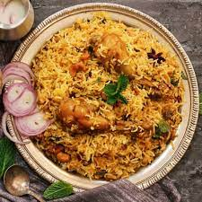
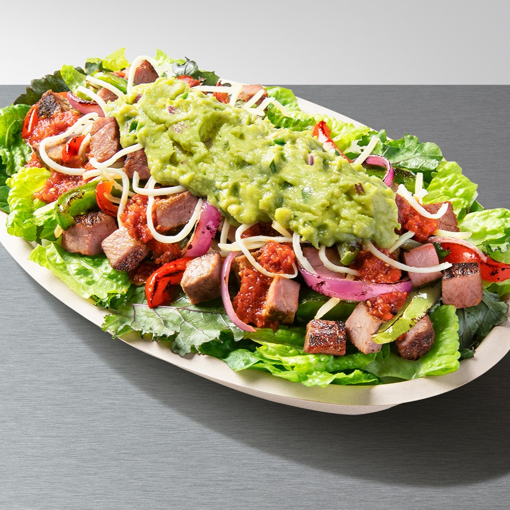
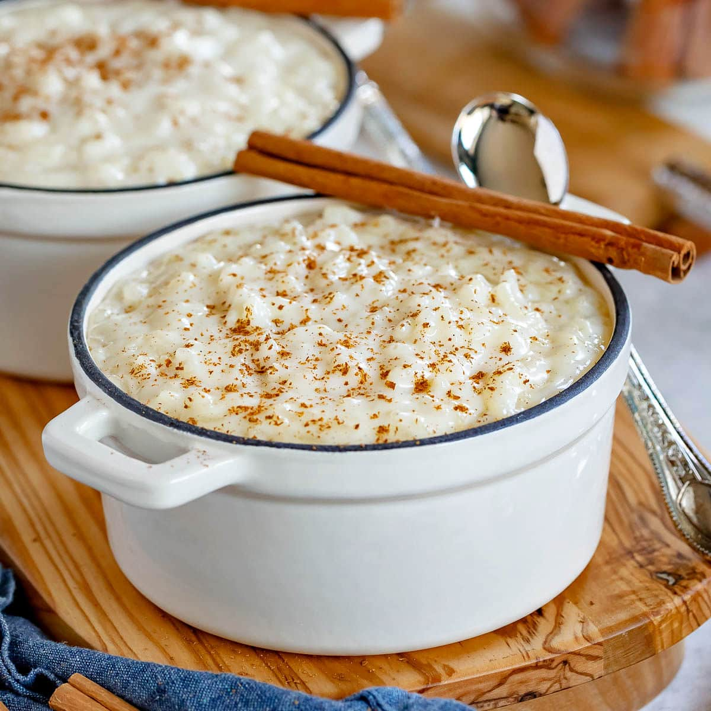
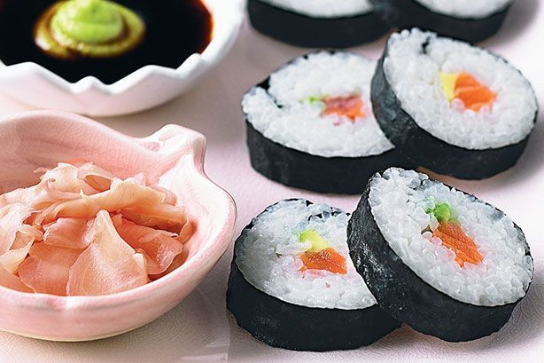

|
|||
| Welcome to a culinary journey that transcends borders and traditions - a celebration of the humble grain that has captured the hearts and palates of people around the world. In this blog, we invite you to explore the diverse and delectable world of rice dishes, where tradition meets innovation. From timeless classics like biryani and sushi to the unexpected and non-traditional creations that push the boundaries of flavor, our curated collection showcases the versatility of rice as a canvas for culinary creativity. Join us as we embark on a flavorful exploration, discovering both the comforting familiarity of traditional rice dishes and the exciting allure of unconventional culinary twists that redefine the art of cooking with this beloved staple. Get ready to savor the global symphony of rice in ways you've never imagined! | |||
|  | Biryani is a sflavorful and aromatic South Asian dish that has gained widespread popularity for its rich and diverse taste. This dish typically consists of basmati rice cooked with spices, herbs, and a variety of meats or vegetables. The key to biryani's distinctive taste lies in the layering of ingredients, allowing the flavors to meld together during the slow cooking process. Depending on the regional variations, biryani can be spiced with a range of ingredients such as saffron, cardamom, cloves, and cinnamon, creating a symphony of flavors. Whether it's the fragrant Hyderabadi biryani, the succulent Lucknawi biryani, or any other regional adaptation, biryani stands out as a beloved dish, cherished for its rich history and delicious complexity. | Fried rice, originating in China, is a versatile and beloved dish in Asian cuisines. Made by stir-frying pre-cooked rice with vegetables, proteins, and flavorful seasonings like soy sauce and sesame oil, it transforms leftovers into a satisfying meal. Whether classic Chinese fried rice or Thai pineapple fried rice, its quick preparation and endless variations make it a globally cherished comfort food. | |
|  | The Chipotle burrito bowl is a culinary delight that has captured the taste buds of many. . Packed with options, diners can choose a base of cilantro-lime rice or lettuce, and top it with a choice of protein like grilled chicken, barbacoa, or sofritas. The bowl is then adorned with a variety of toppings, including black beans, pico de gallo, cheese, guacamole, and sour cream. The combination results in a harmonious blend of flavors and textures, creating a satisfying and fulfilling meal. Whether enjoyed in the restaurant or as a convenient takeout option, the Chipotle burrito bowl has become a go-to choice for those craving a delicious and customizable Mexican-inspired feast. |  | Rice pudding is a classic and comforting dessert that transcends cultures. This creamy treat is made by simmering rice with milk, sugar, and aromatic spices until it achieves a rich and velvety consistency. Garnished with raisins, nuts, or a sprinkle of spices, rice pudding offers a delightful combination of textures and tastes. Whether served warm or chilled, it is a beloved dish globally, satisfying sweet cravings or concluding a meal with comforting tradition. |
|  | Sushi, originating from Japan, is a globally celebrated culinary art form. This iconic dish features vinegared rice combined with various ingredients, expertly rolled into bite-sized delights. From traditional nigiri to creative maki rolls, sushi offers a symphony of flavors and textures. Accompanied by pickled ginger, soy sauce, and wasabi, each bite is a harmonious blend of sweet, savory, and umami. Sushi represents not only a delicious culinary experience but also an appreciation for precision and balance, making it a global favorite for those seeking a taste of Japan's culinary excellence. | Indulge in the whimsical world of our culinary capybaras with our signature dish, Capybara Fried Rice. In our kitchen, these friendly creatures bring their unique flair to the art of crafting this classic delight. Picture expertly stir-fried rice tossed with a colorful medley of vegetables, succulent proteins, and a dash of capybara creativity. Each grain of rice tells a story of playful collaboration, resulting in a dish that not only tantalizes the taste buds but also brings a smile to your face. Join us for a dining experience where capybaras transform a simple fried rice into a magical and heartwarming culinary adventure. | |
| As we conclude this culinary adventure through the diverse realm of rice dishes, we hope your taste buds have savored the richness of flavors and the cultural tapestry woven into each grain. From the comforting embrace of traditional recipes to the exciting surprises of non-traditional innovations, rice has proven itself as a versatile and cherished ingredient. Whether you found yourself reminiscing over familiar favorites or discovering new and unexpected delights, we appreciate you joining us on this gastronomic exploration. As you venture back into your kitchen or set out to explore new dining experiences, may the love for rice continue to inspire your culinary escapades. Until our next flavorful rendezvous, happy cooking and bon appétit! | |||
|
|||